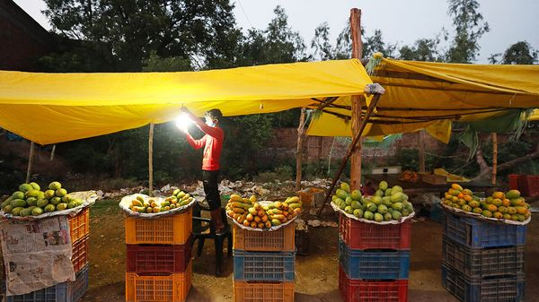

Jul 09, 2026 05:22 AM | DELHI

Hundreds of people had gathered to honour India’s favourite fruit. Braving the heat in Delhi’s Lodhi Gardens, a rapper riffed on the double meaning of aam, the Hindi word for both mango and common, as in common man. People dressed in mango-themed outfits were lectured by a mango farmer. Finally, the party, the fifth to be organised by an enthusiast named Ravinder Singh, descended into the mass munching of 120kg of the stuff.
Japan won’t be having any, though. It has banned fresh mango imports from India, after the world’s biggest producer failed its pest-control checks. India flunks a lot of such tests. Its spices, seafood and rice all face restrictions, bans and extra inspections in America, Europe and Asia. The EU has issued 365 alerts against various Indian food products in the past two years. The problem begins on farms, where runaway pesticide use and banned chemicals are common and good pest control is not. Corruption and lax monitoring mean that pesticides, drug residues and microbial bugs like salmonella then travel smoothly up the supply chain.
Bad food is bad for business. A single cargo container of spices can be worth over $100,000, so rejection by inspectors hurts. Harder to measure are reputational hits and extra inspection costs in the future. The EU already lab-tests 20-50% of all Indian chilli and curry-leaf shipments—at the producers’ expense.
The biggest victims are unsuspecting Indians. Almost one in five samples that the Food Safety and Standards Authority of India tested in 2024-25 failed. One recent raid in Gujarat unearthed a stockpile of worm-eaten and fungus-infected mangoes destined for juice. Artificial ripening—a banned but common chemical trick—can cause organ failure. Other things can kill over decades: the bigger the amount of certain pesticides you consume, the greater the risk of cancer.
Some fixes are for policy wonks. There could be a national farm-to-port tracing system for agricultural exports, and more testing labs along the supply chain. Other solutions may require high-level input. Over the past decade Bangladesh has virtually eliminated poisoning from lead chromate, a chemical that was frequently added to the spice turmeric to enhance its colour. Lead is toxic to humans, increasing the risk of brain and heart disease, and particularly dangerous to children because it can stunt their cognitive development.
Bangladesh’s action against the additive involved public intervention from the prime minister, as well as a graphic TV campaign and the plastering of 50,000 notices in markets and other public areas. Adulteration of turmeric with the chemical was made a crime; India had done that earlier, but failed to implement its rules. It could do a lot worse than learn from its often looked-down-upon neighbour. ■
Stay on top of our India coverage by signing up to Essential India, our free weekly newsletter.